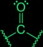
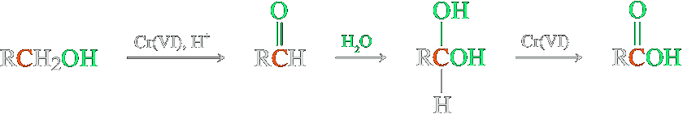
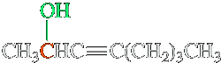
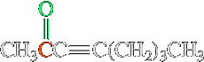

Aldehyde and Ketones

Aldehydes and ketones both contain the carbonyl group − a group in which a carbon atom has a double bond to oxygen.
The carbonyl group of an aldehyde is bonded to one hydrogen atom and one carbon atom (excpet for methanal or formaldehyde, which is the the only bearing two hydrogen atoms). The carbonyl grop of a ketone is bonded to two carbon atoms.
Following are Lewis structures for formaldehyde, ethanal (which is always called acetaldehyde) and propanone.
| Methanal (Formaldehyde) | Ethanal (Acetaldehyde) |
 Propanone Propanone(Acetone) |
According to valence bond theory, the carbon-oxygen double bond consists of one σ bond formed by the overlap of sp2 hybrid orbitals of carbon and oxygen and one π bond formed by the overlap of parallel 2p orbitals. The two nonbonding pairs of electrons on oxygen lie in the remaining sp2 hybrid orbitals.
Nomenclature
IUPAC names for aldehydes and ketones follow the familiar pattern of selecting as the parent alkane the longest chain of carbon atoms that contains the functional group. We show the aldehyde group by changing the suffix -e of the parent alkane to -al (Section 2.3). Because the carbonyl group of an aldehyde can only appear at the end of a parent chain and because numbering must start with it as carbon-1, its position is unambiguous; there is no need to use a number to locate it. For unsaturated aldehydes, the presence of a carbon-carbon double or triple bond is indicated by the infix -en- or -yn-. As with other molecules with both an infix and a suffix, the location of the group corresponding to the suffix determines the numbering pattern.
| CH3CCH3CH2CH=0 | 2HC=CCH=O |  |
| 3-Methylbutanal | 2-Propenal (Acrolein) | (2E)-3,7-Dimethyl-2,6-octadienal (Geranial) |
For cyclic molecules in which —CHO is bonded directly to the ring, the molecule is named by adding the suffix -carbaldehyde to the name of the ring. The atom of the ring to which the aldehyde group is bonded is numbered 1.

Among the aldehydes for which the IUPAC system retains common names are benzaldehyde and cinnamaldehyde, as well as formaldehyde and acetaldehyde. Note here the alternative ways the phenyl group can be written. In benzaldehyde, it is written as a line-angle formula; in cinnamaldehyde, it is written C6H5—.

C6H5—C=CH—CHO
trans-3-Phenyl-2-propenal
(Cinnamaldehyde)
In the IUPAC system, ketones are named by selecting as the parent alkane the longest chain that contains the carbonyl group and then indicating its presence by changing the suffix from -e to -one. The parent chain is numbered from the direction that gives the carbonyl carbon the smaller number. The IUPAC system retains the common names acetone, acetophenone, and benzophenone.
IUPAC Names for More Complex Aldehydes and Ketones
In naming compounds that contain more than one functional group that might be indicated by a suffix, the IUPAC system has established an order of precedence of functions. Table 1.0 gives the order of precedence for the functional groups we have studied so far.
| Functional Group | Suffix if Higher Priority | Prefix if Lower Priority | Example When the Functional Group Has Lower Priority | |
|---|---|---|---|---|
| Carboxyl | -oic acid | — | ||
| Aldehyde | -al | oxo- | 3-Oxopropanoic acid |  |
| Ketone | -one | oxo- | 3-Oxobutanoic acid | CH3COCH2COOH |
| Alcohol | -ol | hydroxy- | 4-Hydroxybutanoic acid | HOCH2CH2CH2COOH |
| Amino | -amine | amino- | 3-Aminobutanoic acid | |
| Sulfhydryl | -thiol | mercapto | 2-Mercaptoethanol | HSCH2CH2OH |
Common Names
The common name for an aldehyde is derived from the common name of the corresponding carboxylic acid by dropping the word acid and changing the suffix -icor -oic to -aldehyde. Because we have not yet studied common names for carboxylic acids, we are not in a position to discuss common names for aldehydes. We can illustrate how they are derived, however, by reference to a few common names with which you are familiar. The name formaldehyde is derived from formic acid; the name acetaldehyde is derived from acetic acid.
Formaldehyde
Common names for ketones are derived by naming the two alkyl or aryl groups bonded to the carbonyl group as separate words, followed by the word ketone.
2-Methyl-3-pentanone
3-Pentanone
dicyclohexylmethanone.png
Preparation
Several ways to prepare aldehydes and ketones have already been described in connection with the chemistry of other functional groups. This section reviews the methods that we have studied, pointing out special features and additional examples. Other routes to aldehydes and ketones will be described in later chapters.
Oxidation of alcohols
Ozonolysis of alkenes
Hydration of alkynes
Oxidation of alcohols
First, we have seen that oxidation of alcohols by chromium(VI) reagents gives carbonyl compounds. Secondary alcohols give ketones. Primary alcohols give aldehydes, but only in the absence of water, to prevent overoxidation to carboxylic acids. Overoxidation of aldehydes in the presence of water is due to hydration to a 1,1-diol. Oxidation of this diol leads to the carboxylic acid.
Chromium(VI) is selective and does not oxidize alkene and alkyne units.
| 3-Octyn-2-ol | CrO3, H2SO4, acetone, 0°C ⟶ | 3-Octyn-2-one |